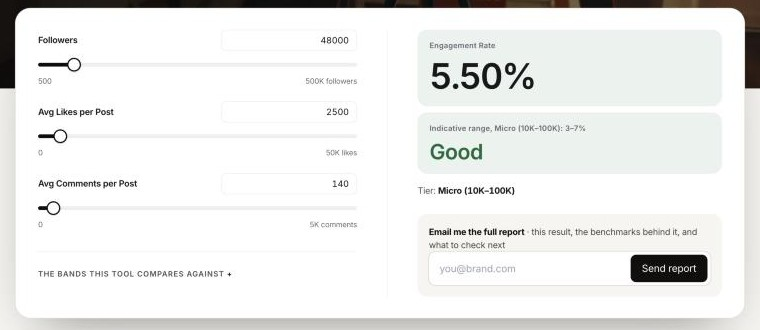

Creators couldn’t judge their own numbers. So we gave them free tools.
Scroll to flip ↻Creators and brands often can’t tell whether an account is actually doing well. Nurdd’s free creator tools answer that from a few numbers, with an instant result and no sign-up. That gives people real value before they join, which builds trust and brings them to Nurdd. I contributed to these tools on Nurdd’s public website.
At a glance
- QuestionIs this account doing well?
- InputsA few numbers
- ResultInstant
- VerdictAgainst benchmarks
- TrustA reason to try Nurdd
What were creators and brands trying to figure out?
Whether an account was actually doing well.
Scroll to flip ↻Creators and brands both look at the same numbers, followers, likes and comments, but they rarely know what “good” looks like. Working it out by hand means guessing, with nothing to compare against.
The questions people kept trying to answer
The gapWithout a benchmark, creators can’t tell how they’re doing, and brands can’t tell who to work with.
How do the free tools work?
A few inputs, an instant result, compared against benchmarks.
Scroll to flip ↻Each tool answers one question. You enter a few numbers, get an instant result, and see how it compares with typical accounts of the same size.
How a tool works

Why give the tools away for free?
Value before sign-up builds trust and brings people in.
Scroll to flip ↻The tools are free and need no sign-up, on purpose. People get a useful answer first, and that is what makes them trust Nurdd enough to come back and join.
How the tools bring people in
I contributed to Nurdd’s free creator tools on the public website. The Nurdd team has updated them since my internship.
People trust a product that helps them before asking for anything in return.
Track how many tool users go on to sign up, to see whether the tools actually bring people to Nurdd.
I don’t have usage or sign-up numbers for the tools, so this page shows none.
Up nextHow clear steps made QikD easier to trust